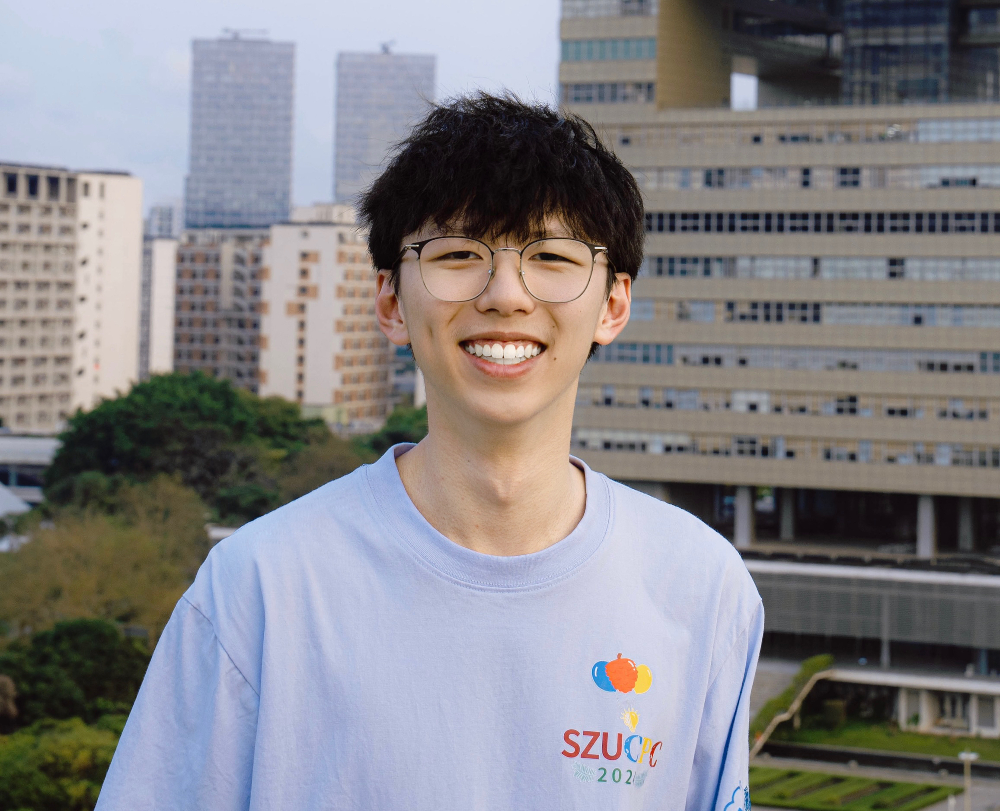

Tianxing Chen 陈天行
Undergraduate Student @ Shenzhen University
Computer Science and Technology, 


 [Resume] [中文简历]
[Resume] [中文简历]
|
 Latest updated in May. 2024 |
Biography
Hi! I am Tianxing Chen (陈天行), currently pursuing a Bachelor's degree in Computer Science at Shenzhen University (expected graduation in July 2025) and doing research at Shanghai AI Laboratory (Pujiang National Laboratory) and National Engineering laboratory for Big Data System Computing Technology, supervised by Yao Mu.My research interests mainly focus on Embodied AI, on behavior planning and policy based on Diffusion Model, LLM and Reinforcement Learning. I am very interested in the application of policy in robot manipulation and autonomous driving scenarios.
Feel free to contact me by email if you are interested in discussing or collaborating with me.
News
- [05/2024] I started AtomAgent Research Group (AARG) !
- [04/2024] One paper is accepted by ICARM 2024, which is my first paper 🌹 !
- [04/2024] We won the National Gold Medal 🏅, Provincial Runner-up 🏆 of China Collegiate Computing Contest (CCCC) !
- [03/2024] One paper is submitted to ICARM 2024 !
- [01/2024] Joined Shanghai AI Laboratory (Pujiang National Laboratory) as aa Intern Researcher. Started doing research on Robotics !
- [10/2023] I received the highest honor for undergraduate students at Shenzhen University, "Excellent Star of SZU", ranked 2nd among the 30,000 undergraduates in the school (top 0.0067%) ! [Report]
- [10/2023] I received CCF Elite Collegiate Award, which is awarded by China Computer Federation, to the top 99 students nationwide in 2023 ! [Report]
- [09/2023] Joined National Engineering laboratory for Big Data System Computing Technology as a Intern Researcher. Started doing research on RL !
- [08/2023] Our team won the National Runner-up 🏆 of RAICOM !
- [06/2023] I started to lead the SZU Algorithm Training Team !
- [01/2023] Our team (SZU_Tencent) won Silver Medal 🥈 in 46th ICPC Asia, Hong Kong !
Education

|
Shenzhen University (SZU), China B.Eng. (currently studying) in Computer Science and Technology (Excellent Class) GPA 91.0 / 100, Ranking top 2% Sep. 2021 - Jun. 2025 (expected)
|

|
Guangzhou TieYi High School (GTYZ), China High School graduate, direction: Physics, Biology, Geography Sep. 2018 - Jun. 2021 |
Research & Visiting Experience

|
OpenGVLab, Shanghai AI Laboratory (Pujiang National Laboratory) Jan. 2024 - Present, Intern Researcher, Shanghai, China Working with Mu Yao and Dr. Wenhai Wang Topic: Diffusion Model & LLM for Robotic Manipulation |

|
(MMLab@HKU) Multimedia Laboratory at The University of Hong Kong Jan. 2024 - Feb. 2024, Intern Researcher, Hong Kong, China Working with Mu Yao and Zhixuan Liang Topic: Diffusion Model & LLM for Robotic Manipulation |

|
National Engineering laboratory for Big Data System Computing Technology Sep. 2023 - Present, Intern Researcher, ShenZhen, China Working with Prof. Jie Chen and Prof. Jianqiang Li (IET Fellow) Topic: Reinforcement Learning for UAV Speed Control |
Research Group

|
AtomAgent Research Group (AARG, 原子智能体研究小组) Since May. 2024, as founder. We are an academic group focusing on Embodied AI and Agent research. Feel free to contact me if you are interested in joining us ! |
Selected Publications | Full List

|
Robust UAV Policy Learning for Urban Infrastructure Surface Screening Bingging Du1, Uddin Md. Borhan2, Tianxing Chen, Jianyong Chen, Jiangiang Li*, and Jie Chen* Accepted by ICARM 2024(The IEEE International Conference on Advanced Robotics and Mechatronics) |
Competition Awards (Selected)
During college (up to now 2 years), I have won a total of 16 national awards.| [2024] National gold medal team & Provincial runner-up🏆, (CCCC) China Collegiate Computing Contest. |
| [2023] Silver Medal🥈, (ACM-ICPC) International Collegiate Programming Contest Regional Contest (46th). |
| [2023] National Runner-up🏆, RoboCom Robot Development Competition (RAICOM). |
| [2023] Gold Medal, (GDCPC) China Collegiate Programming Contest Guangdong Provincial Contest. |
| [2023] Silver Medal, (CCPC) China Collegiate Programming Contest National Invitational Contest. |
| [2023] National First Prize, top 0.3%, Blue Bridge Cup Programming Contest (C/C++). |
| [2023] National Silver Medal Team, (CCCC) China Collegiate Computing Contest. |
| [2023] Bronze Price, (CCPC) China Collegiate Programming Contest Regional Contest. |
| [2022] Provincial Second Prize, Wechat Mini Programs Application Development Contest. |
| ...... |
Honors
| -- Selected -- |
| [2023] CCF Elite Collegiate Award, awarded by China Computer Federation, to the top 99 students nationwide. [Report] |
| [2023] "Excellent Star of SZU", the highest honor for undergraduate students at Shenzhen University [Report], Ranked 2nd among the 30,000 undergraduates in the school (top 0.0067%), the only junior to win the award (creating the history of the college, tying the school’s history), the only award-winning student of college in the past 3 years, CNY 50,000 |
| -- Others -- |
| [2023] Liyuan Star Scholarship, the highest honor for college-level undergraduates, CNY 20,000 |
| [2023] Pengcheng Scholarship, 71 students selected from 30,000 undergraduate students, CNY 10,000 |
| [2023] Outstanding Student Leader of Shenzhen University |
| [2023] First Prize of Scholarship for Top Innovative Talents, ranked first in the selection, CNY 12,000 |
| [2023] First Prize for Outstanding Student Leaders, the only class leader among the first prize, CNY 3,000 |
| [2023] First Prize of Innovation & Entrepreneurship Star (Individual), CNY 3,000 |
| [2023] Second Prize of Charity Star, CNY 2,000 |
| [2023] Second Prize of Study Star, CNY 2,000 |
| [2023] First Prize of Innovation & Entrepreneurship Star (Group), CNY 2,000 |
| [2023] Third Prize of Cultural and Sports Star (Group), CNY 2,000 |
| [2023] Advanced class collective, ranked first in grade (served as monitor), CNY 1,000 |
| [2022] Liyuan Star Scholarship, the highest honor for college-level undergraduates, CNY 20,000 |
| [2022] First Prize of Scholarship for Top Innovative Talents, ranked first in the selection, CNY 12,000 |
| [2022] First Prize of Innovation & Entrepreneurship Star (Individual), CNY 3,000 |
| [2022] Second Prize of Study Star, CNY 2,000 |
| [2022] Advanced class collective, ranked first in grade (served as monitor), CNY 1,000 |
| [2021] Full tuition scholarship for top innovative talents, CNY 6,000 |
Engineering Experience

|
Easy2Buy_Shouyi: Outcome: The demo has been delivered to Yangqu Government, Taiyuan City, Shanxi Province, and won the second prize (Provincial) in WeChat Mini Program Application Development Competition, [Report] |
Clubs
Leadership Experience
Reports
[04/2024], 《学习竞赛公益样样都行，我承认他真的太帅了！》the official Xiaohongshu account of Shenzhen Univerity, which has over 40,000 followers.
[02/2024], 《学子专访 | 陈天行：身登峰峦之高, 亦怀江湖之远》
the official wechat account of College of Computer Science and Softward Engineering, SZU, with more than 1,000 visits.
[01/2024], 《在深大, 他们“自定义”卓越》
the official wechat account of Shenzhen University, with over 10,000 visits.
[11/2023], 《2023年度CCF优秀大学生启航计划发布典礼在沈举行》
reported by the official website of China Computer Federation (CCF).
[09/2022], 《学子专访 | 陈天行：促进电商发展, 帮助乡村振兴》
the official wechat account of College of Computer Science and Softward Engineering, SZU, with more than 1,000 visits.